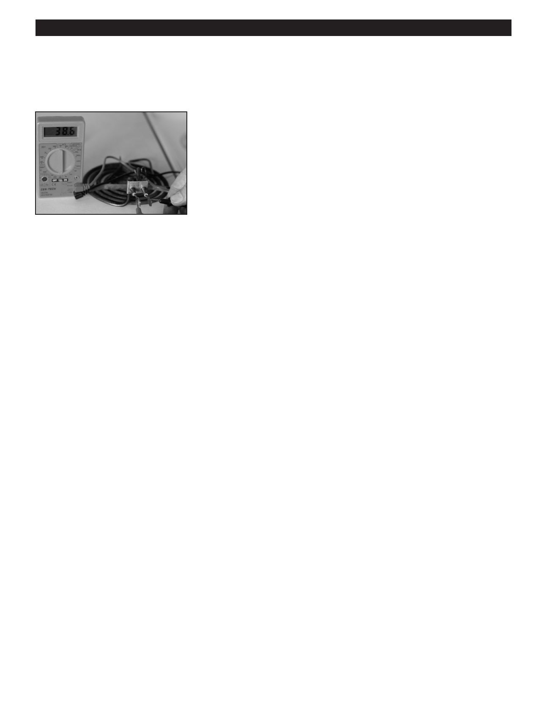

PA RT I C I PA N T R E S O U R C E G U I D E
Key Tools for Heating Repairs (continued)
Specialty Heating Repair Tools
Notes:
A multimeter is a “must-have” tool
used to measure electrical voltage, test
for continuity, and test resistance in
devices like heating elements.
A special tool for opening
baseboard or other terminal units
often comes with the unit itself. A
screwdriver can be substituted in its
absence.
A carbon monoxide tester may be
handy when working on gas furnaces.
10